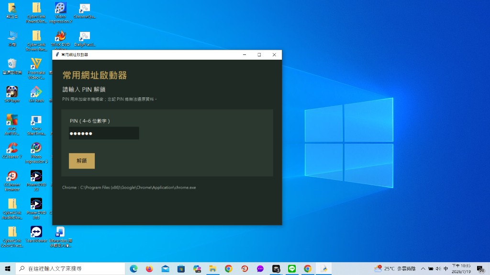
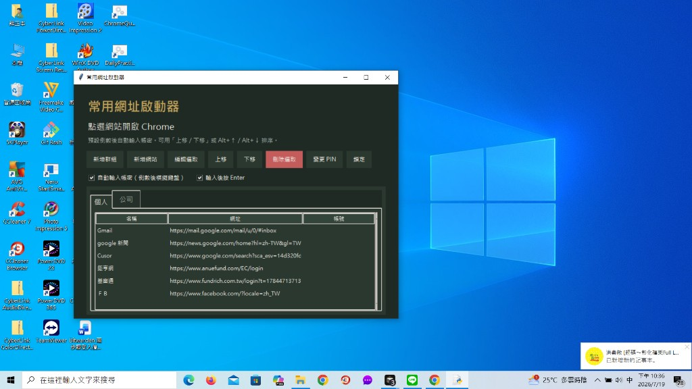

20260719 Chrome 常用網址啟動器（PIN／分群／自動登入）
用 Cursor 做桌面中文小工具「常用網址啟動器」：PIN 解鎖、分群、Chrome 開啟、自動填密、上下排序；並完成換機同步流程與「工作電腦一次貼上」提示詞。另在 hello-world 的 202607 目錄加上搜尋框。
一｜今日核心目標
- 從桌面快速開啟常用網站，並分群（例如「個人」「公司」）。
- 用 PIN 解鎖後才看得到／用得到帳密。
- 點選後開 Chrome；可自動輸入帳密，也可只複製。
- 網站清單可上下排序；順序寫回加密金庫。
- 把程式＋已打好的網址，安全同步到有 Cursor 的工作電腦。
- 學習日誌 202607 目錄可搜尋關鍵字。
二｜工作大要（啟動器）
| 項目 | 做法 |
|---|---|
| 專案位置 | 本機 Desktop\ChromeQuickLogin；桌面捷徑 ChromeQuickLogin.lnk |
| 介面 | Python + Tkinter，繁體中文；解鎖畫面／主畫面分群分頁 |
| 加密 | PIN（4–6 位）→ PBKDF2 衍生金鑰 → Fernet 加密 data/vault.dat |
| 瀏覽器 | 固定找本機 Chrome 路徑開啟網址 |
| 自動登入 | 倒數約 4 秒 → 使用者點帳號欄 → SendInput 模擬：帳號 → Tab → 密碼 → Enter |
| 排序 | 選取網站後「上移／下移」或 Alt+↑／Alt+↓；未選網站時可移動群組分頁 |
| 安全 | data/ 列入 .gitignore；公開日誌不放 PIN、帳密、私人網址參數 |
| 遠端備份 | 私有倉庫 github.com/copyshae/ChromeQuickLogin（僅程式，不含金庫） |
正確流程是「解鎖 → 選網站 → 開啟並自動填密」，不要把帳密寫進捷徑、.bat 或網址參數。
二‧二｜工作大要（換機／工作電腦）
| 項目 | 做法 |
|---|---|
| 程式怎麼搬 | 工作電腦 git clone 私有庫（或已有則 git pull） |
| 網址／帳密怎麼搬 | 本機跑 打包換機.ps1 → 桌面產生 ChromeQuickLogin-vault-*.zip（內含 vault.dat＋meta.json）→ USB／私密雲端帶走 |
| 為什麼分開 | 金庫刻意不進 Git；程式可上雲，密文檔只走私密管道 |
| PIN | 兩台必須同一組；忘記無法還原 |
| 一次貼上提示詞 | 專案內 工作電腦安裝提示詞.md：整段貼到工作電腦 Cursor，自動 clone、還原 data、建 venv、建捷徑 |
| 還原位置 | Desktop\ChromeQuickLogin\data\ 放成對的兩個檔後，雙擊 啟動.bat／捷徑驗證 |
換機口訣：程式走 Git｜金庫走 zip｜PIN 自己記｜提示詞貼 Cursor。
二‧三｜工作大要（學習日誌站）
- 本篇日誌上傳兩張成果截圖，並掛到 202607 目錄與首頁跑馬燈。
- 202607 目錄頁（
directory/logs/index.html）新增搜尋框：依日期／關鍵字即時篩選日誌列表。
三｜使用步驟（實作成果）
- 雙擊桌面
ChromeQuickLogin。 - 首次設定 4–6 位數字 PIN（忘記無法還原）。
- 「新增群組／新增網站」建立清單與帳密。
- 選網站 →「開啟並自動登入」（或雙擊）。
- Chrome 開啟後倒數期間，點一下帳號欄，等待自動輸入。
- 要用貼上模式：取消勾選自動輸入，或按「只開啟／複製」。
四｜成果截圖


五｜學到的技術點
- 短 PIN 只適合搭配本機 Windows 登入鎖；金庫檔本身不可推上公開遠端。
- 真正「任意網站一鍵登入」很難做穩；倒數＋焦點在帳號欄再模擬鍵盤，比硬塞表單可靠。
- 排序只要改 list 順序並重新加密寫回即可，不必另建排序欄位。
- Windows 部分環境對中文
.lnk檔名會失敗，捷徑改用英文檔名較穩。 - 換機要「程式／資料分離」：clone 拿程式，zip 拿加密金庫；漏拷
meta.json會解不開。 - 把安裝步驟寫成給 Cursor 的提示詞，比在工作電腦重記指令更省事。
六｜連結
- 前一日：20260718 遠端保全與 Bitwarden
- 程式私有庫：ChromeQuickLogin（內含
工作電腦安裝提示詞.md、打包換機.ps1） - 202607 目錄（含搜尋）：directory/logs/｜線上 Pages
- Pages 本頁：copyshae.github.io … /20260719-chrome-quick-login.html
截圖僅展示介面；實際帳密與 PIN 不會出現在本公開日誌。